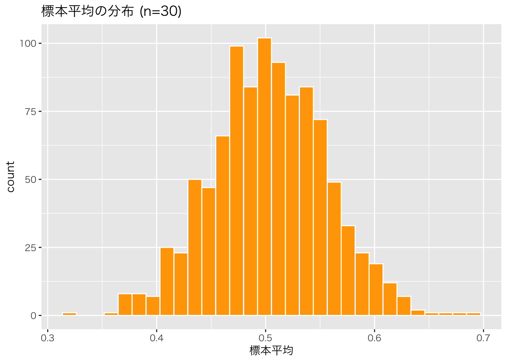

library(tidyverse)
set.seed(1)
# 母集団分布（平均50, 標準偏差10の正規分布）
population <- rnorm(100000, mean = 50, sd = 10)
# パラレルワールド1：1回目の抽出（n=100）
sample1 <- sample(population, 100)
mean(sample1)
#> [1] 50.24966
# パラレルワールド2：もう1回抽出
sample2 <- sample(population, 100)
mean(sample2)
#> [1] 50.48065第7回 標本分布

一滴の血液で、全身を知る
たった数mlの血液を検査するだけで、全身の健康状態がわかってしまう。 選挙の出口調査では、数千人の回答から全国民の意思を予測できる。
なぜ、そんなことができるのか？ なぜ、「一部」を見るだけで「全体」が見えるのか？
今回は、統計的推測の根幹を支える標本分布という考え方と、そこに働く数学的な魔法（大数の法則・中心極限定理）について学びます。これで、記述統計から推測統計への架け橋がかかる。
1. 未知の世界と鍵穴：母集団と標本
私たちが本当に知りたいのは「全体」のこと。しかし、手に入るのは常に「一部」のデータだけ。
- 母集団 (Population): 知りたい対象の全体。「未知の世界」。無限の広がりを持つ確率分布としてモデル化されます。
- 標本 (Sample): そこから切り取られた一部のデータ。「鍵穴から覗いた景色」。推測の、唯一の手がかり。
全数調査の限界
母集団をすべて調べる「全数調査」は、コスト的にも時間的にもほぼ不可能。 すべての製品を破壊検査するわけにはいかないし、全ての消費者にアンケートを取ることもできない。 だからこそ、標本から母集団を推測する技術（推測統計学）が必要になるのです。
ランダムという名の公平性
標本が母集団を正しく映し出すためには、ランダム標本でなければならない。 恣意的に選ばれたデータではなく、確率 \(F(\mu, \sigma^2)\) に従って選ばれた独立なデータたち。これを数学的には i.i.d. (独立同一分布) と呼びます。
2. パラレルワールドの実験：標本分布
ここから少し、想像力を働かせてほしい。 もし、同じ母集団から、何度も何度も標本抽出をやり直したとしたら、どうなるか？
今回の調査では平均値が \(50\) だった。でも別の調査（パラレルワールド）では \(52\) かもしれないし、\(48\) かもしれない。 この「統計量（平均値など）のばらつき」を表した確率分布を、標本分布 (Sampling Distribution) と呼びます。
現実には調査は1回しかできません。しかし、この「もし何度もやったらどうなるか」という仮想的な分布こそが、推測の精度の鍵を握っています。
Rでパラレルワールドをシミュレーションしてみましょう。
毎回結果が少しずつ違う。この「ブレ」を数学的に捉えるのが目標です。
3. 数学的な魔法
サンプルサイズ（標本の大きさ）が増えると、2つの重要な現象が起きる。
大数の法則：真実への収束
サンプルサイズ \(n\) を大きくしていくと、標本平均は母平均（真の値）に限りなく近づいていく。 「数は力なり」。データが多ければ多いほど、誤差は消えていく。
n <- 1000
dice_rolls <- sample(1:6, n, replace = TRUE)
cumulative_mean <- cumsum(dice_rolls) / (1:n)
df <- data.frame(n = 1:n, mean = cumulative_mean)
ggplot(df, aes(x = n, y = mean)) +
theme_gray(base_family = "HiraKakuProN-W3") + # [対象注意] Mac用設定
geom_line() +
geom_hline(yintercept = 3.5, color = "red", linetype = "dashed") +
labs(title = "大数の法則: 試行回数と標本平均の収束", y = "標本平均")
中心極限定理 (CLT)：混沌からの秩序
ここが統計学のハイライト。 母集団がどんなに歪な分布であっても、サンプルサイズ \(n\) が大きければ、その標本平均の分布は正規分布に近づいていく。
元のデータが正規分布していなくても、平均値の分布は正規分布になる。 この定理のおかげで、私たちはあらゆるデータに対して正規分布を前提とした推測を行うことができる。
実験：一様分布から正規分布へ 母集団として平坦な一様分布を用意し、そこから標本平均を計算する実験を行います。
# 1. 一様分布のヒストグラム（母集団の形状）
hist(runif(10000), main = "Population (Uniform Distribution)", xlab = "x")
# 2. 標本平均の分布（CLTの確認）
n_samples <- 1000
n <- 30 # サンプルサイズ
means <- numeric(n_samples)
for (i in 1:n_samples) {
means[i] <- mean(runif(n))
}
ggplot(data.frame(x = means), aes(x = x)) +
theme_gray(base_family = "HiraKakuProN-W3") + # [対象注意] Mac用設定
geom_histogram(bins = 30, fill = "orange", color = "white") +
labs(title = "標本平均の分布 (n=30)", x = "標本平均")
見事に釣鐘型（正規分布）が現れました。これが中心極限定理の威力。
サンプルサイズと分布の鋭さ
データが増えると、分布はどう変化するのか。
sample_sizes <- c(5, 30, 100)
n_samples <- 2000
results <- data.frame()
for (n in sample_sizes) {
# n個の平均をn_samples回計算
means <- replicate(n_samples, mean(runif(n)))
results <- bind_rows(results, data.frame(means = means, size = paste0("n=", n)))
}
# nの順序指定
results$size <- factor(results$size, levels = paste0("n=", sample_sizes))
ggplot(results, aes(x = means)) +
theme_gray(base_family = "HiraKakuProN-W3") + # [対象注意] Mac用設定
geom_histogram(bins = 30, fill = "steelblue", color = "white") +
facet_wrap(~size, scales = "free_y") +
labs(title = "中心極限定理: サンプルサイズによる標本分布の変化", x = "標本平均")
\(n\) が増えるにつれて、分布は正規分布に近づくだけでなく、その幅（ばらつき）が小さくシャープになっていく。
4. 信用の尺度：標準誤差
標本平均の分布のばらつき、つまり「推測の精度」を表す指標が 標準誤差 (Standard Error, SE) 。
\[SE(\bar{X}) = \frac{\sigma}{\sqrt{n}}\]
この式は非常に重要なことを教えてくれる。 精度を上げる（SEを小さくする）には、サンプルサイズ \(n\) を大きくすればいい。ただし、\(\sqrt{n}\) で効いてくるため、精度を2倍にするにはサンプルを4倍にする必要があります。
# 理論上のSE
true_se <- sqrt(1/12 / 30)
# シミュレーションのSE（標本平均の標準偏差）
sim_se <- sd(results %>% filter(size == "n=30") %>% pull(means))
cat("理論的SE:", true_se, "\n")
#> 理論的SE: 0.05270463
cat("シミュレーションSE:", sim_se, "\n")
#> シミュレーションSE: 0.05283213標準偏差(SD) vs 標準誤差(SE)
この2つは混同しやすいので注意してください。
- 標準偏差 (SD): データのばらつき。「個々のデータがどれくらい散らばっているか」。
- 標準誤差 (SE): 平均値のばらつき。「標本平均が真の平均からどれくらいズレうるか」。
私たちが知りたい「推定の信用度」を表すのは、標準誤差のほうです。
課題
- 大数の法則: コイン投げ（表=1, 裏=0）のシミュレーションを行い、試行回数 \(n\) を \(10\) から \(10000\) まで増やしたとき、標本平均が理論値 \(0.5\) に収束する様子をグラフで描画してください。
- 標準誤差の性質: 母標準偏差 \(\sigma=10\) の正規分布において、標準誤差を \(1\) 以下にするためには、最低何個のサンプルサイズが必要か計算してください。
練習問題
練習1: 指数分布のCLT
指数分布（rexp）は右に裾が長い歪んだ分布です。この分布からサンプルを抽出しても、標本平均の分布は正規分布に近づくか、シミュレーションで確認してください。
練習2: サンプルサイズと精度
標準誤差の式 \(SE = \sigma / \sqrt{n}\) に基づき、以下の問いに答えてください。
- サンプルサイズを100から400に増やすと、標準誤差はどう変化しますか？
- 標準誤差を \(1/10\) にするためには、サンプルサイズを何倍にする必要がありますか？
練習3: 記述統計と推測統計
手元に \(n=100\) のデータがあります。 - このデータの平均値と標準偏差を計算すること（記述統計）と、 - このデータの平均値から標準誤差を計算して信頼区間を求めること（推測統計） の違いを、自分の言葉で説明してください。
まとめ
| 概念 | 記号/式 | 意味 |
|---|---|---|
| 標本分布 | - | 統計量（平均など）のパラレルワールドでの分布 |
| 大数の法則 | \(n \to \infty\) で \(\bar{X} \to \mu\) | データが増えれば平均は真の値に近づく |
| 中心極限定理 | \(n\) 大なら \(\bar{X} \sim N(\mu, \sigma^2/n)\) | 平均値の分布は（元が何であれ）正規分布になる |
| 標準誤差 | \(\sigma / \sqrt{n}\) | 推定の精度。「平均値のブレ幅」 |